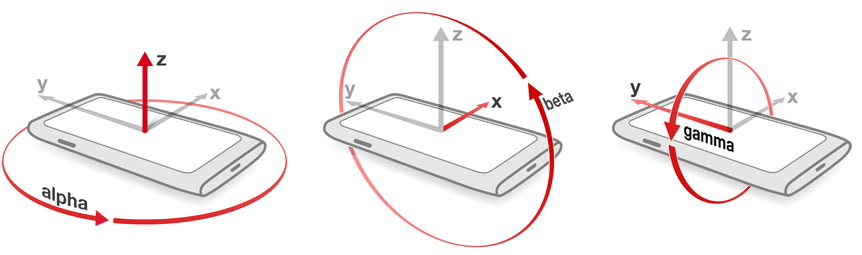

Devices, Browsers and You
A Brief History
User Interaction
-
HTML controls
<input>, <select>, <textarea>
-
Javascript events
-
Keyboard -
onkeydown, onkeyup, etc -
Mouse -
onclick, onmouseover, etc -
Touch -
touchstart, touchmove, etc
-
Keyboard -
But I Want More!
- Install separate program
-
Use a plugin
- Flash
- Java applet
- Silverlight
How do we get around this?

HTML5
-
New elements
<video>, <audio>, <canvas>
-
Native APIs
- Access device hardware directly from javascript
-
Write once, run anywhere (ish)
- Still at the mercy of cross browser compatibility
-
Chrome + Firefox around 65%
statcounter.com
Navigator.getUserMedia
- Camera
- Microphone
- Screen sharing
- User permission required
Browser Support
| Desktop |  |
|
|
||
| Mobile | |
|
|
Example
var getUserMedia = navigator.getUserMedia ||
navigator.webkitGetUserMedia ||
navigator.mozGetUserMedia;
getUserMedia(
{
audio: true,
video: true // can also be a config object
},
function(stream) {
var video = document.querySelector('video');
video.src = window.URL.createObjectURL(stream);
video.onloadedmetadata = function(e) {
video.play();
};
},
function(err) {
console.log("The following error occurred: " + err.name);
}
);
Example
Camera
Uses
- Video chat, conferencing
- Motion detection
- Facial recognition
Facial Substitution Demo
http://auduno.github.io/clmtrackr/examples/facesubstitution.html
- clmtrackr
- WebGL
Microphone
Uses
- Phone calls
- Voice commands
-
Speech to text
- Web Speech API - Chrome only
- Doppler effect
Device Orientation
Accelerometer, Gyroscope & Magnometer
Orientation
 alphathe number of degrees
the device is being twisted
around the center of
the screen gamma
the number of degrees
the device is turned
left or right beta
the number of degrees
the device is tipped
forward or backward
Example
window.addEventListener("deviceorientation", function(event) {
var alpha = event.alpha; // degress twisted around center
var beta = event.beta; // degrees tipped forward or backward
var gamma = event.gamma; // degrees turned left or right
// do something awesome here
}, true);
Browser Support
| Desktop | |
|
|
||
| Mobile | |
|
|
|
|
Demo
http://www.html5rocks.com/en/tutorials/device/orientation/deviceorientationsample.htmlGeolocation
- Access user latitude and longitude
- Permission required
Browser Support
| Desktop | |
|
9+ | |
|
| Mobile | |
|
|
|
|
Example
navigator.geolocation.getCurrentPosition(success, error);
function success(position) {
var latitude = position.coords.latitude;
var longitude = position.coords.longitude;
// do something clever here
}
function error() {
console.log('Unable to get location');
}
Uses
- Find nearest [something]
- Plot user location on map - real time tracking
- Directions - to/from current location
- Geocaching
Light Sensor
-
Gives light intensity value in lux
- 10 ~ 50 lux: Dim Environment
- 100 ~ 1000 lux: Normal
- > 10000 lux: Bright
Uses
- Change page theme depending on light level
Browser Support
| Desktop | |
||||
| Mobile | |
Example
window.addEventListener('devicelight', function (event) {
var luminosity = event.value;
// do something blindingly good here
});
Demo
Current lux level
Best of the Rest
Proximity
- Detect when a user is close to the screen
- Firefox only :(
window.addEventListener('userproximity', function(event) {
if (event.near) {
console.log('user is near');
}
else {
console.log('user is not near');
}
}, true);
Vibration
Chrome, Firefox and Opera
// Vibrate once for one second
navigator.vibrate(1000);
// Vibrate for 3 seconds, wait 2 seconds, then vibrate for 1 second
navigator.vibrate([3000, 2000, 1000]);
Battery Status
Chrome, Firefox and Opera
navigator.getBattery().then(function(battery) {
battery.charging; // true/false
battery.level; // % displayed as decimal from 0 to 1
battery.chargingTime; // time spent charging
battery.dischargingTime; // time spent not charging
});
More coming (one day)
- Temperature
- Humidity
- Air Pressure
- Noise Level